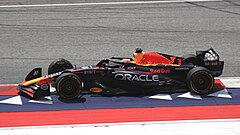

Red Bull Racing został założony w 2004 roku po przejęciu zespołu Jaguar Racing przez austriacką firmę Red Bull GmbH. Od tego czasu zespół stał się jednym z najbardziej dominujących w historii F1, zdobywając liczne tytuły mistrzowskie i stając się symbolem innowacji oraz agresywnej strategii wyścigowej.
Od 2010 roku Red Bull Racing zdobył wiele mistrzostw świata, zarówno w klasyfikacji konstruktorów, jak i kierowców. Czterokrotna dominacja Sebastiana Vettela (2010-2013) oraz sukcesy Maxa Verstappena od 2021 roku umocniły ich pozycję jako jednej z najlepszych ekip w historii F1
Milton Keynes-Wielka brytania
Red Bull Racing w 2025 roku korzysta z jednostek napędowych Red Bull Powertrains, rozwijanych we współpracy z Fordem. Zespół słynie z innowacyjnych rozwiązań aerodynamiki i strategii wyścigowych
Bolid Haasa na rok 2023
Max Verstappen Holenderski kierowca wyścigowy, czterokrotny mistrz świata Formuły 1.
Sergio Pérez Meksykański kierowca wyścigowy, startujący w mistrzostwach świata Formuły 1 od sezonu 2011.
Liam Lawson Nowozelandzki kierowca wyścigowy, startujący w mistrzostwach świata Formuły 1 od 13. rundy sezonu 2023 w zespole Scuderia AlphaTauri.